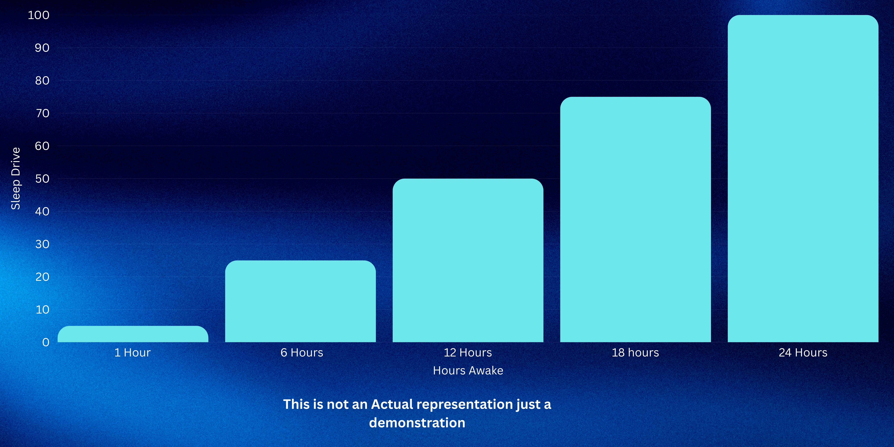
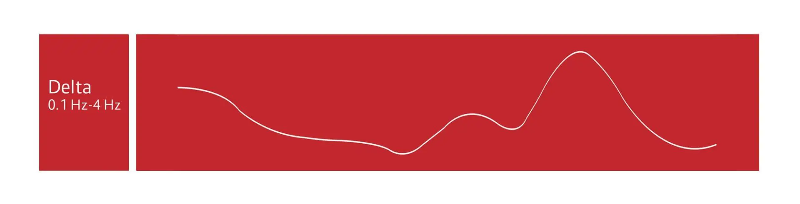

What Is N3?
This is the deep sleep stage. The N3 stage is charecterized by it brain waves called Delta Waves. These are the shortest waves that your brain can produce. Memory consolidate can also happen in this stage as well as other importat things like getting rid of brain waste and relasing growth hormones. This stage takes up about 25% of your sleep. Our deep sleep is affected by our "sleep drive" as mention earlier.
This Image shows that the longer you stay woke the higher you sleep drive is
Explination Continued
In this stage you are now properly sleeping and usually if you are awoken in this stage you would feel tired an groggy. N3 also helps repair your muscles and the brain also process information(like in N2). This stage usually only last about 20 to 40 mintutes. When you reach N3 sleep it greatly restores your mental health On an EEG you can see delta waves recorded in real time. When they reach 20% of a 30 second snapshot you can offically say someones in stage 3 sleep. The bloodflow to your brain also decreases by at least 25% when you reach N3 sleep. The decrease is only really prevalent in the prefrontal cortex or the decision maker and planner. Your body does this to reserve energy since you probably won't be making any decisions while you sleep.
When we sleep our nervous system stablilizes and our fight or flight system decreases. The nerve system will drop to half its normal working level. The digestive system increases when we sleep so our body can process the food for energy for the next day. Yes! N3 also does memory consolidation. However, N3 focuses on declaritive memory or ecplicit memory. Memory is split into 2 catogries, Declarative or Non-declarative(implicit) memory. Declarative Memory is the information that we personally experience, like if you seen a dog cross the street you know that it happened. it's basically facts and information that get processed. Non-declarative is like pcocessing a skill. This is where the saying," you never forget how to ride a bike" comes from; since it isn't a skill that you need to use everyday in order to remember how to use it.